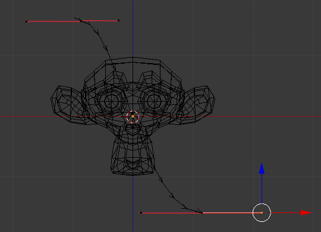
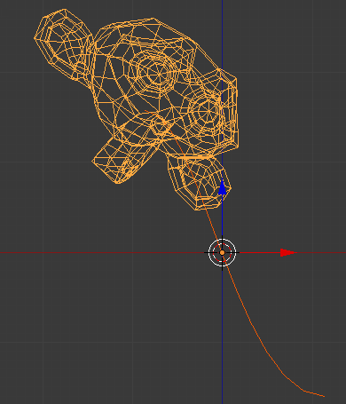

曲线修改器–knight翻译¶
曲线修改器为沿着曲线物体变形提供了一种简单而高效的方法。
曲线修改器工作在（全局）主轴，X，Y，Z上。也就是说，当你沿着主轴移动网格（默认是X轴），网格会沿着曲线来回移动。沿着垂直该轴的方向移动，物体会变得更近或者远离该曲线。
当你移动的幅度超过曲线的两端，物体会在曲线端点指向的向量方向上继续变形。
选项¶

Curve modifier.
- 物体
影响变形物体的曲线物体的名字。
- 顶点组
形变物体的顶点数组名称。修改器只对该组的顶点生效。
- 形变轴:
This is the axis that the curve deforms along.
X, Y, Z, -X, -Y, -Z
示例¶
Let us make a simple example:
- Remove default cube object from scene and add a Monkey with
- Now add a curve with

{kind=link}
编辑曲线。
- While in Edit Mode, move the control points of the curve as shown in Fig. 编辑曲线。,
then exit Edit Mode
Tab. - Select the Monkey
RMBin Object Mode 如下图所示，将曲线指定为修改器。猴头放在曲线上：
Assign the Bézier curve to the Curve modifier (for Monkey).

{kind=link}
曲线上的猴头。
- Now if you select the Monkey, and move it in the Y-direction
G-Y, the monkey will deform nicely along the curve.
小技巧
如果在移动猴头的时候按下了鼠标中键 MMB，你会限制在一个轴上移动。

猴头变形
- In the image above you can see the Monkey at different positions along the curve. To get a cleaner view over the deformation, a Subdivision Surface modifier with two subdivision levels was applied, and smooth shading was used.